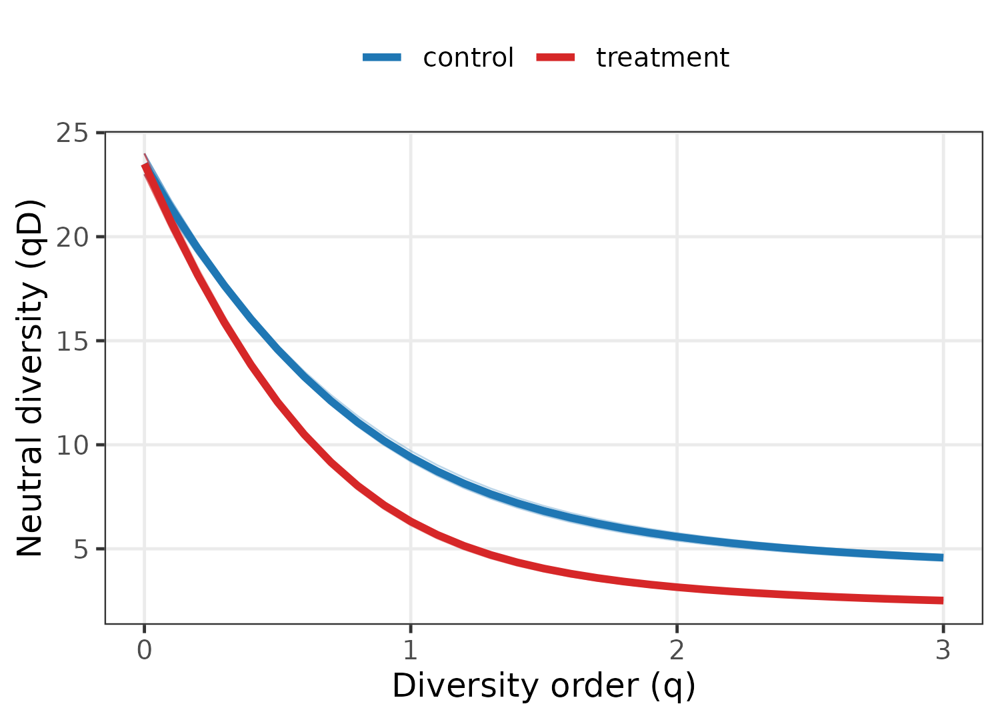

Use case: three faces of diversity in a gut microbiome
Source:vignettes/articles/use-case-bacterial-mags.Rmd
use-case-bacterial-mags.Rmd
library(hilldiv3)
library(ggplot2)
theme_set(theme_bw(base_size = 12) +
theme(panel.grid.minor = element_blank(),
legend.position = "top"))
# hilldiv3 results are long-format data.frame subclasses; drop the class so
# base `$<-` / `rbind` (and ggplot2) work without coercion.
as_df <- function(x) { class(x) <- "data.frame"; x }
pal <- c(control = "#1F77B4", treatment = "#D62728")Genome-resolved metagenomics summarises a microbial community as a
table of metagenome-assembled genome (MAG) abundances. Each MAG carries
two extra layers of information that a raw count ignores: its
position on the bacterial phylogeny and its
functional attributes (genome size, GC content, oxygen
tolerance, encoded capabilities). A treatment that reshapes a community
may leave taxon richness untouched while collapsing its evenness,
eroding its phylogenetic breadth, or hollowing out its functional
repertoire. hilldiv3 measures all three from the same count
table and the same calls, so the layers can be compared on a common,
interpretable scale (effective numbers of lineages).
The data
We use the bundled simulated data set: 24 MAGs across 12 host
gut samples, split into a control and a
treatment group of six. A block of MAGs is enriched under
treatment, so the intervention changes which genomes dominate
without removing taxa. gut_tree is the genome phylogeny and
gut_traits a trait table mixing continuous
(genome_size, gc_content), categorical
(oxygen) and binary (motility) attributes.
group <- rep(c("control", "treatment"), each = 6)
names(group) <- colnames(gut_counts)
metadata <- data.frame(group = group, row.names = colnames(gut_counts))
grp <- function(s) group[s]
head(gut_traits)
#> genome_size gc_content oxygen motility
#> mag01 2.22 0.573 anaerobe 0
#> mag02 2.66 0.617 facultative 0
#> mag03 2.85 0.571 anaerobe 1
#> mag04 3.19 0.393 aerobe 1
#> mag05 2.83 0.561 facultative 1
#> mag06 4.14 0.489 facultative 1traits2dist() turns that mixed trait table into a
functional distance with Gower’s coefficient, which handles the
different variable types automatically:
fdist <- traits2dist(gut_traits)
range(fdist)
#> [1] 0.0000000 0.8301962Neutral, phylogenetic and functional diversity from one call
The diversity type is chosen by what you supply: nothing
extra → neutral, tree = → phylogenetic, dist =
→ functional. The interface never changes.
neu <- as_df(hilldiv(gut_counts, q = c(0, 1, 2)))
phy <- as_df(hilldiv(gut_counts, q = c(0, 1, 2), tree = gut_tree))
fun <- as_df(hilldiv(gut_counts, q = c(0, 1, 2), dist = fdist))
neu$flavour <- "Neutral (qD)"
phy$flavour <- "Phylogenetic (qPD)"
fun$flavour <- "Functional (qFD)"
alpha <- rbind(neu, phy, fun)
alpha$group <- grp(alpha$sample)
alpha$flavour <- factor(alpha$flavour,
c("Neutral (qD)", "Phylogenetic (qPD)", "Functional (qFD)"))
aggregate(value ~ flavour + q + group, alpha, function(x) round(mean(x), 2))
#> flavour q group value
#> 1 Neutral (qD) 0 control 23.50
#> 2 Phylogenetic (qPD) 0 control 4.17
#> 3 Functional (qFD) 0 control 1.79
#> 4 Neutral (qD) 1 control 9.40
#> 5 Phylogenetic (qPD) 1 control 2.37
#> 6 Functional (qFD) 1 control 1.74
#> 7 Neutral (qD) 2 control 5.58
#> 8 Phylogenetic (qPD) 2 control 1.99
#> 9 Functional (qFD) 2 control 1.71
#> 10 Neutral (qD) 0 treatment 23.50
#> 11 Phylogenetic (qPD) 0 treatment 4.18
#> 12 Functional (qFD) 0 treatment 1.66
#> 13 Neutral (qD) 1 treatment 6.31
#> 14 Phylogenetic (qPD) 1 treatment 2.08
#> 15 Functional (qFD) 1 treatment 1.60
#> 16 Neutral (qD) 2 treatment 3.15
#> 17 Phylogenetic (qPD) 2 treatment 1.72
#> 18 Functional (qFD) 2 treatment 1.55
ggplot(alpha, aes(factor(q), value, fill = group)) +
geom_boxplot(outlier.size = 0.6, width = 0.7) +
facet_wrap(~ flavour, scales = "free_y") +
scale_fill_manual(values = pal, name = NULL) +
labs(x = "Diversity order (q)", y = "Effective number of lineages")
The result is a layered story that no single metric could tell.
Richness (q = 0) is identical between
groups — counting MAGs would conclude the treatment did
nothing. Yet as soon as abundance is weighted (q = 1, 2)
the treatment community is markedly less diverse: effective Shannon
diversity falls from ~9.4 to ~6.3 and Simpson from ~5.6 to ~3.2, because
the enriched block now dominates. The same depression appears in the
phylogenetic and functional numbers (and, for function, already at
q = 0), showing the dominant genomes are also
phylogenetically and functionally redundant with one another. Reading
diversity across q and across flavours is exactly
what separates “nothing changed” from “the community was hollowed
out”.
Profiles confirm a loss of evenness, not richness
prof <- as_df(hillprof(gut_counts, q = seq(0, 3, by = 0.1)))
prof$group <- grp(prof$sample)
prof_mean <- aggregate(value ~ q + group, prof, mean)
ggplot(prof, aes(q, value, group = sample, colour = group)) +
geom_line(alpha = 0.3, linewidth = 0.3) +
geom_line(data = prof_mean, aes(group = group), linewidth = 1.3) +
scale_colour_manual(values = pal, name = NULL) +
labs(x = "Diversity order (q)", y = "Neutral diversity (qD)")
Control and treatment profiles start together at q = 0
and fan apart as q rises — the visual fingerprint of an
intervention that redistributes abundance rather than removing taxa.
Where does the community differ — taxonomically or functionally?
hillpart() partitions diversity between the two groups
and reports beta, the effective number of distinct communities. Running
it for each flavour shows which axis the treatment shifts:
part <- function(type, ...) {
m <- as_df(hillpart(gut_counts, q = c(0, 1, 2), hierarchy = ~ group,
metadata = metadata, ...))
m <- m[m$scale == "total", c("q", "beta")]
m$flavour <- type
m
}
beta <- rbind(part("Neutral"),
part("Phylogenetic", tree = gut_tree),
part("Functional", dist = fdist))
beta$flavour <- factor(beta$flavour, c("Neutral", "Phylogenetic", "Functional"))
ggplot(beta, aes(factor(q), beta, fill = flavour)) +
geom_col(position = position_dodge(0.8), width = 0.7) +
geom_hline(yintercept = 1, linetype = 2, colour = "grey40") +
scale_fill_brewer(palette = "Set2", name = NULL) +
labs(x = "Diversity order (q)",
y = expression("Between-group turnover (" * beta * ")"))
Between-group beta grows with q for the neutral and
functional decompositions, but stays essentially flat
for the phylogenetic one (β ≈ 1). The enriched genomes are scattered
across the phylogeny — so the community’s phylogenetic composition
barely moves — yet they are functionally similar to each other, so the
functional makeup of the dominant community shifts the most.
Distinguishing taxonomic, phylogenetic and functional turnover on one
common beta scale is a core strength of the Hill-number framework as
implemented here.
Ordination on two different distances
hillpair() accepts the same tree = /
dist = switch, so a single workflow produces ordinations in
neutral and functional space:
ord_one <- function(d, lab) {
pc <- cmdscale(d, k = 2)
o <- data.frame(pc, mag = rownames(pc))
names(o)[1:2] <- c("PCoA1", "PCoA2")
o$group <- grp(o$mag); o$space <- lab
o
}
ord <- rbind(
ord_one(hillpair(gut_counts, q = 1, metric = "C"), "Neutral (q = 1)"),
ord_one(hillpair(gut_counts, q = 1, metric = "C", dist = fdist), "Functional (q = 1)")
)
ggplot(ord, aes(PCoA1, PCoA2, colour = group)) +
geom_point(size = 2.4) +
stat_ellipse(level = 0.68) +
facet_wrap(~ space, scales = "free") +
scale_colour_manual(values = pal, name = NULL) +
labs(x = "PCoA 1", y = "PCoA 2")
Both ordinations separate control from treatment, and comparing them shows whether group structure is driven by which taxa or which functions differ — two questions one distance alone cannot disentangle.
Functional redundancy
Finally, hillred() quantifies functional
redundancy: it fits the saturating relationship between neutral
diversity (number of genomes) and functional diversity (number of
distinct trait profiles) across samples. A curve that plateaus well
below the spread of neutral diversity means many genomes share functions
— a redundant, and therefore functionally resilient, community.
red <- hillred(gut_counts, q = c(1, 2), dist = fdist)
as_df(red)[, c("q", "redundancy")]
#> q redundancy
#> 1 1 0.7227861
#> 2 2 0.5767745
plot(red)
The fitted redundancy is high (well above 0.5), so adding genomes contributes far less than proportional new function: the gut community carries substantial functional insurance, even where (as the alpha analysis showed) the treatment has thinned its effective diversity.
Summary
From one MAG table plus a genome tree and a trait table,
hilldiv3 produced a complete three-flavour analysis through
one interface: trait-to-distance conversion
(traits2dist()); neutral, phylogenetic and functional alpha
diversity (hilldiv()); diversity profiles
(hillprof()); between-group partitioning for each flavour
(hillpart()); ordinations on neutral and functional
distances (hillpair()); and functional redundancy
(hillred()). The unified, type-switching interface is what
lets a single study report taxonomic, phylogenetic and functional
diversity side by side, on comparable scales.
References
- Jost, L. (2007). Partitioning diversity into independent alpha and beta components. Ecology, 88, 2427–2439.
- Chiu, C.-H., Jost, L. & Chao, A. (2014). Phylogenetic beta diversity, similarity, and differentiation measures based on Hill numbers. Ecological Monographs, 84, 21–44.
- Alberdi, A. & Gilbert, M.T.P. (2019). A guide to the application of Hill numbers to DNA-based diversity analyses. Mol. Ecol. Resour., 19, 804–817.